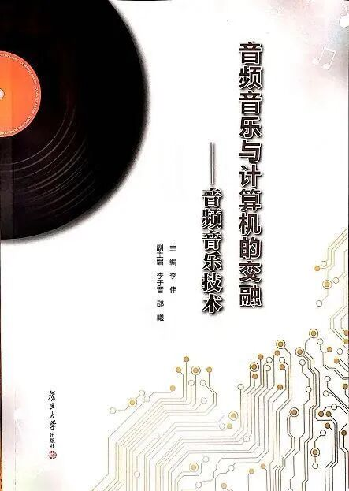

「INFO」《音频音乐技术》正式出版
"音频音乐与计算机的交融——音频音乐技术"一书由50余位大学老师、公司博士和博士硕士研究生联合编写，历经3年终于由复旦大学出版社正式出版了！
♬ 即日起可在京东/天猫/当当等各大网上书店订购！该书全文468页，895千字，对文理科声音与音乐技术的教学科研具有全面的参考价值 ♬
博主本人也非常荣幸作为50余编者之一，对书中第三章做了些贡献:)

『内容摘要』
近20年来，随着数字音频音乐的急剧增加，形成了音乐科技/音乐人工智能与计算机听觉/AI声学这一多领域交叉的新兴学科。本书全面介绍其主要内容，包括音频及音乐基础，音频特征及音频信号处理，常用机器学习技术，音乐信息检索MIR中的音高/旋律提取、自动记谱、节奏分析、和声分析、歌声信息处理、音乐搜索、音乐结构分析、音乐情感计算、音乐推荐、音乐分类，音乐生成中的自动作曲、歌声合成、数字乐器声合成，以及音乐演奏数据与建模，一般音频计算机听觉，音频信息安全，音频与视频和文本的融合，音乐制作、声景及声音设计，音乐录音、计算机交互与声音艺术，实用工具等内容。本书适合作为文理科涉及声音的课程教材及科研参考资料。
『目录』
- 前言
-
第一章 音频音乐技术概述
- 第一节 理解数字音乐——音乐信息检索技术综述
- 第二节 理解数字声音——基于一般音频／环境声的计算机听觉综述
-
第二章 音频基础
- 第一节 声学基础
- 第二节 心理声学及感知音频压缩
- 第三节 虚拟现实音频
- 第四节 基础乐理
-
第三章 音频特征及音频信号处理
- 第一节 音频特征
- 第二节 音频信号处理
-
第四章 常用的机器学习技术
- 第一节 监督学习方法
- 第二节 聚类分析
- 第三节 增强学习
- 第四节 生成对抗网络
- 第五节 集成学习
- 第六节 迁移学习
- 第七节 人工神经网络
- 第八节 深度学习
-
第五章 音高估计、主旋律提取与自动音乐记谱
- 第一节 音高估计
- 第二节 主旋律提取
- 第三节 自动音乐记谱
-
第六章 音乐节奏分析
- 第一节 音符起始点检测
- 第二节 节拍追踪
- 第三节 速度估计
- 第四节 节奏模式分析
- 第五节 节奏分析系统评估
-
第七章 和声分析
- 第一节 音乐和声基础
- 第二节 Chroma特征
- 第三节 和弦识别
- 第四节 调性估计
-
第八章 歌声信息处理
- 第一节 歌声检测
- 第二节 歌手识别
- 第三节 歌词识别
- 第四节 哼唱检索
-
第九章 音乐搜索
- 第一节 翻唱歌曲识别
- 第二节 音频指纹
- 第三节 音频水印
-
第十章 音乐结构分析
- 第一节 音乐结构分析概述
- 第二节 音乐结构分析方法
-
第十一章 音乐情感计算
- 第一节 音乐情感表示
- 第二节 音乐情感识别
- 第三节 音乐情感的其他研究方向
-
第十二章 音乐推荐
- 第一节 概述
- 第二节 协同过滤与内容的推荐算法
- 第三节 其他方面的推荐算法研究
-
第十三章 音乐分类
- 第一节 乐器识别
- 第二节 音乐标注
- 第三节 音乐流派分类
-
第十四章 自动作曲
- 第一节 概述
- 第二节 基于符号序列的模型
- 第三节 基于音频的模型
- 第四节 可控作曲与辅助作曲
-
第十五章 歌声合成
- 第一节 原理和方法
- 第二节 歌声合成技术的发展趋势
- 第三节 已有歌声合成系统
-
第十六章 数字乐器声合成
- 第一节 音频合成概述
- 第二节 音频合成类型
- 第三节 神经网络音频合成
-
第十七章 音乐演奏数据与建模
- 第一节 音乐表情
- 第二节 演奏评估
-
第十八章 一般音频计算机听觉
- 第一节 概述
- 第二节 音频事件检测与分类
- 第三节 声音场景分析
- 第四节 其他一般音频任务
-
第十九章 音频信息安全
- 第一节 音频信息安全概述
- 第二节 音频信息隐藏
- 第三节 音频取证
-
第二十章 音频与视频和文本的融合
- 第一节 概述
- 第二节 音频与视频信息融合
- 第三节 音频与文本信息融合
-
第二十一章 音乐制作、声景及声音设计
- 第一节 音乐制作
- 第二节 声景及声音设计
-
第二十二章 音乐录音、计算机交互与声音艺术
- 第一节 录音技术概述
- 第二节 音乐录音的关键技术
- 第三节 计算机交互音乐
- 第四节 计算机交互与声音艺术的思想理念
-
附录 音频音乐技术领域实用工具
- 附录一 音频与音乐科研数据库
- 附录二 MIREX竞赛简介
- 附录三 音频音乐技术领域期刊及会议
- 附录四 音频音乐领域研发机构及公司
- 附录五 中英文音频音乐专业术语
- 习题
- 参考文献
- 后记
- 编委会简介
最后再次感谢主编李伟老师，副主编李子晋和卲曦老师，以及50余位同行编者！希望大家支持这本如此系统介绍音频音乐技术的中文书籍！